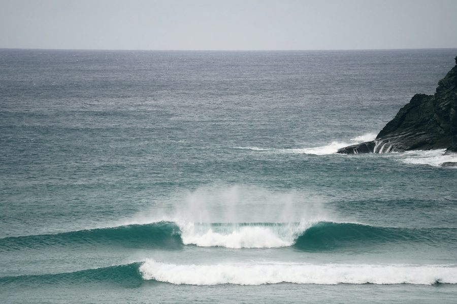
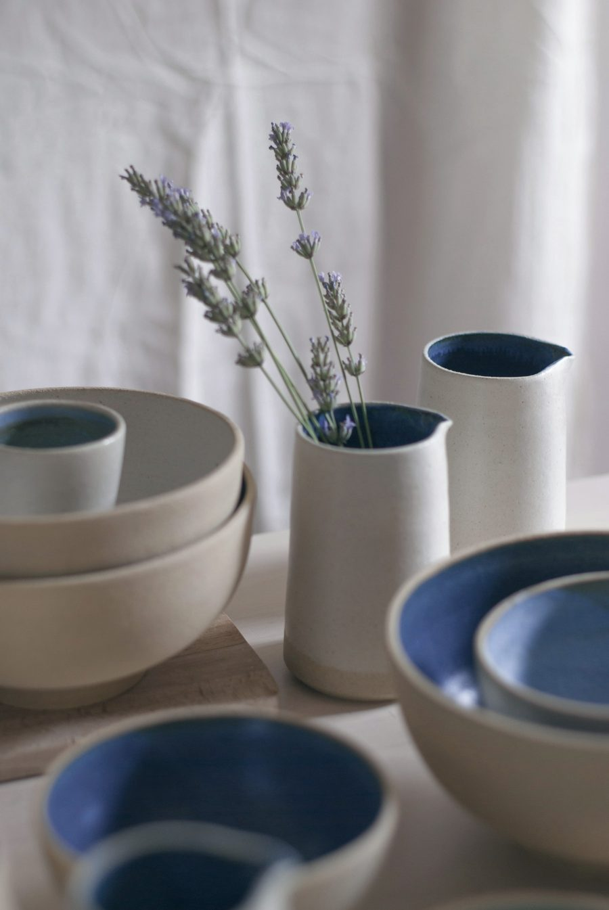
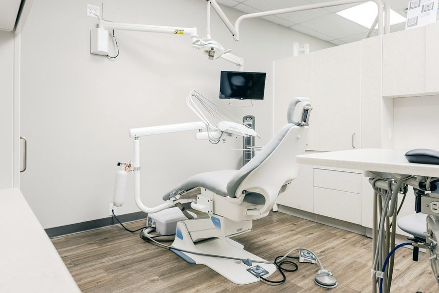
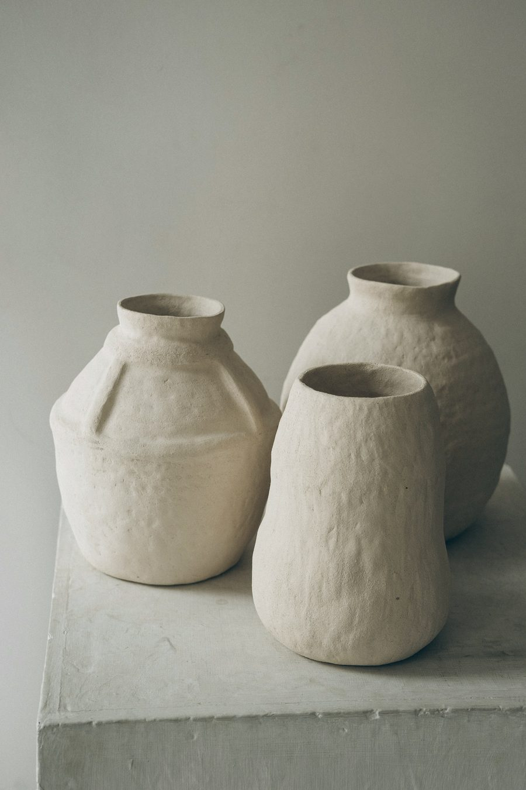
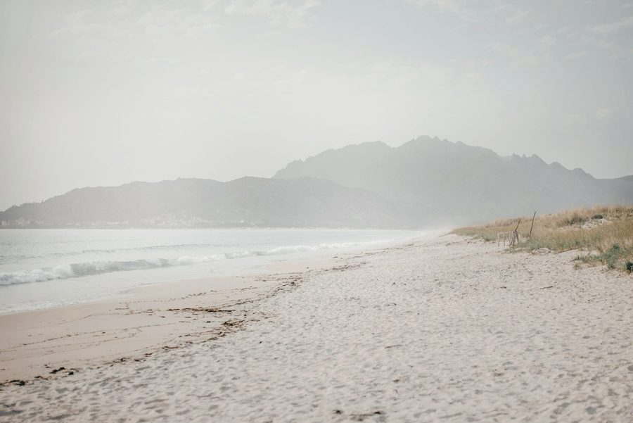

01
Odontología general y prevención
Revisiones, diagnóstico y el plan de siempre: cuidar antes de tener que tratar.
Pendiente de confirmarOdontología en Carballo con calma atlántica: sin prisas, con las cosas explicadas antes de hacerlas.
La idea
Una consulta no debería sonar a consulta. Luz de mañana, tiempo para explicar y tiempo para preguntar. Tratamos bocas, pero sobre todo tratamos a personas que llegan con prisa y se van sin ella.


Cada cita con el tiempo que necesita, no con el que cabe en la agenda.
Qué vamos a hacer, cuánto y por qué, antes de empezar. Nunca a mitad.
Un equipo que te llama por tu nombre. Las reseñas hablan de eso, y del trato con los niños.
Tratamientos
Lista orientativa de odontología general. [LISTA DE TRATAMIENTOS PENDIENTE DE CONFIRMAR CON LA CLÍNICA]
Revisiones, diagnóstico y el plan de siempre: cuidar antes de tener que tratar.
Pendiente de confirmarLimpiezas y salud de las encías: la base silenciosa de todo lo demás.
Pendiente de confirmarMejoras que se notan sin que se vean. Blancos naturales, no de anuncio.
Pendiente de confirmarAlineación para adultos y niños, con el sistema que encaje en tu vida y no al revés.
Pendiente de confirmarReponer lo que falta con criterio, planificación y el tiempo que hace falta.
Pendiente de confirmarPrimeras visitas sin miedo. Que la consulta sea un sitio al que no cuesta volver.
Pendiente de confirmarPrimera visita: [PRECIO PENDIENTE — indicar si es gratuita]. Presupuestos: [PRECIOS PENDIENTES].
Pedir cita
La clínica
Estamos en Rúa Vázquez de Parga, 5, 3ºC, en el centro de Carballo, a un paso de la Costa da Morte que da nombre a esta forma de trabajar: despacio, con luz y sin ruido.


Ficha técnica
Se completa solo con lo que la clínica confirme. Nada se rellena por defecto.
| Lunes | 10:00–14:00 | 16:00–20:00 |
|---|---|---|
| Martes | 10:00–14:00 | — |
| Miércoles | 10:00–14:00 | 16:00–20:00 |
| Jueves | 10:00–14:00 | 16:00–20:00 |
| Viernes | 10:00–14:00 | — |
| Sábado | Cerrado | |
| Domingo | Cerrado | |
Horario
Opiniones
«Muy buen trato, puntuales y muy profesionales, con los niños tienen un trato inmejorable, súper cercanas.»
«Gran atención al paciente y estupendo equipo profesional.»
«Estupenda profesional, muy cercana y amable.»
Contacto
Horario